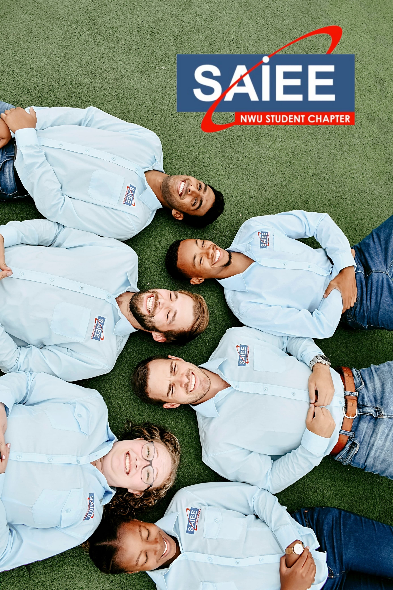
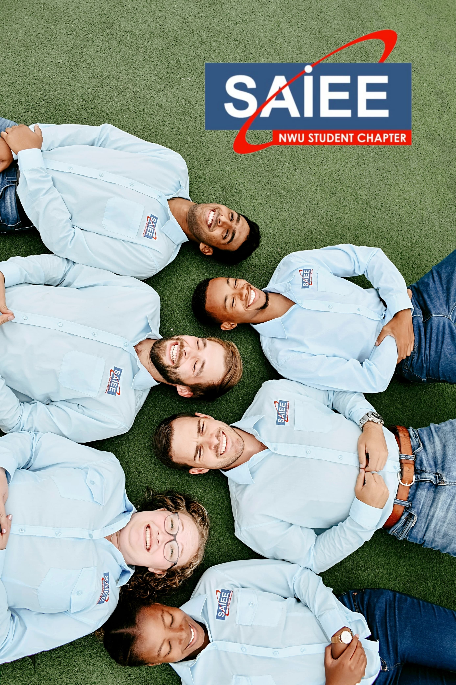

Jonathan Solomon
Faith-Driven Engineer • Ministry Graduate • Creative Problem Solver
Faith-Driven Engineer • Ministry Graduate • Creative Problem Solver
Final-year Electrical and Electronic Engineering student at NWU and graduate of Unite School of Ministry. I’m passionate about building technical systems that matter and living out my faith boldly in every space I walk into.
 
